Fiche de référence — Personnages, répartition & ordre des nuits
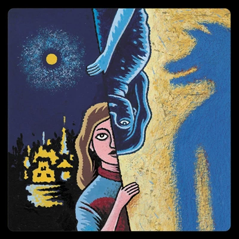
Dès le début, vous savez que l'un de ces 2 joueurs est un Citoyen particulier.
Lavandière — WasherwomanDès le début, vous savez que l'un de ces 2 joueurs est un Marginal particulier. (Ou qu'il n'y en a aucun en jeu.)
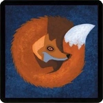
Dès le début, vous savez que l'un de ces 2 joueurs est un loup garou particulier.
Enquêteur — Investigator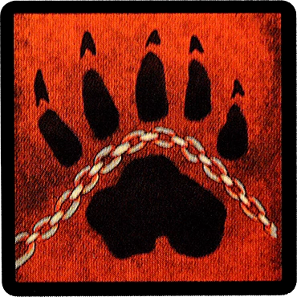
Dès le début, vous savez combien de loups garous sont voisins l'un de l'autre.
Cuisinier — Chef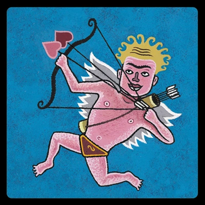
Chaque nuit, vous apprenez combien de vos 2 voisins vivants sont des loups garous.
Empathique — Empath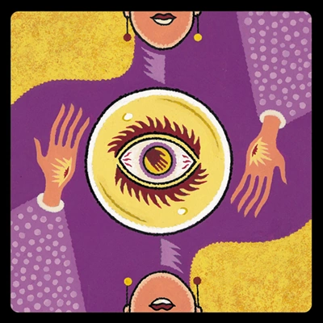
Chaque nuit, choisissez 2 joueurs : vous apprenez si l'un d'eux est le loup garou ultime. Un joueur Gentil vous apparaît comme loup garou ultime.
Voyante — Fortune Teller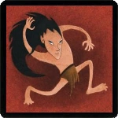
Chaque nuit*, vous apprenez quel personnage a été exécuté pendant la journée.
* Pas la première nuit. Croque-mort — Undertaker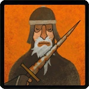
Chaque nuit*, choisissez un joueur (pas vous-même) : il est protégé du louo garou ultime cette nuit.
* Pas la première nuit. Moine — Monk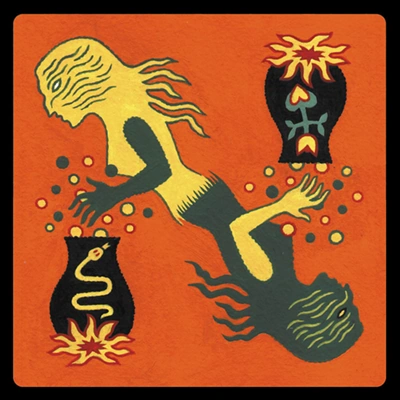
Si vous mourez la nuit, vous êtes réveillé(e) pour choisir un joueur : vous apprenez son personnage.
Corbeau — Ravenkeeper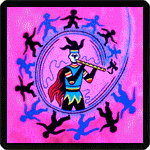
La première fois que vous êtes nominé(e), si le nominateur est un Citoyen, il est immédiatement exécuté.
Vierge — Virgin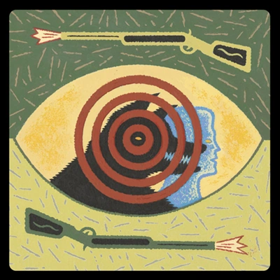
Une fois par partie, pendant le jour, désignez publiquement un joueur : s'il est le loup garou ultime, il meurt.
Tueur à gages — Slayer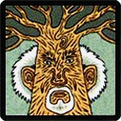
Vous êtes protégé(e) du loup garou ultime.
Soldat — SoldierSi seulement 3 joueurs restent en vie et qu'aucune exécution n'a lieu, votre équipe gagne. Si vous mourez la nuit, un autre joueur pourrait mourir à votre place.
Chaque nuit, choisissez un joueur (pas vous-même) : demain, vous ne pouvez voter que si ce joueur vote aussi.
Vous ne savez pas que vous êtes l'Ivrogne. Vous croyez être un personnage Citoyen, mais ce n'est pas le cas.
Vous pouvez être perçu comme un loup garou, même mort(e).
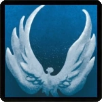
Si vous mourez par exécution, votre équipe perd.
Saint — Saint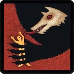
Chaque nuit, choisissez un joueur : il est empoisonné cette nuit et le jour suivant.
Empoisonneur — PoisonerChaque nuit, vous beneficiez des informations du MJ. Vous pouvez être perçu comme Gentil et comme Citoyen ou Marginal, même mort(e).
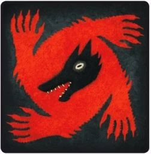
Si le loup garou ultime meurt, vous devenez le louo garou ultime.
Femme écarlate — Scarlet WomanIl y a des Marginaux supplémentaires en jeu.
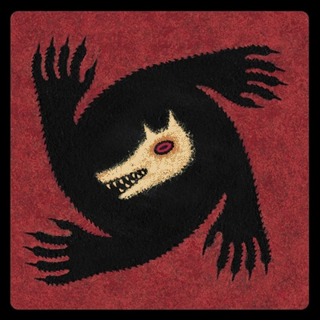
Chaque nuit*, choisissez un joueur : il meurt. Si vous vous tuez ainsi, un autre Loup Garou devient le Loup Garou Ultime.
* Pas la première nuit. Imp — Imp| Joueurs | Total | 👥 Villageois | 🌀 Marginaux | 😈 Loups | 🐺 Loup Ultime |
|---|---|---|---|---|---|
| 5 | 5 | 3 | 0 | 1 | 1 |
| 6 | 6 | 3 | 1 | 1 | 1 |
| 7 | 7 | 5 | 0 | 1 | 1 |
| 8 | 8 | 5 | 1 | 1 | 1 |
| 9 | 9 | 5 | 2 | 1 | 1 |
| 10 | 10 | 7 | 0 | 2 | 1 |
| 11 | 11 | 7 | 1 | 2 | 1 |
| 12 | 12 | 7 | 2 | 2 | 1 |
| 13 | 13 | 9 | 0 | 3 | 1 |
| 14 | 14 | 9 | 1 | 3 | 1 |
| 15 | 15 | 9 | 2 | 3 | 1 |
Note : avec le Baron en jeu, ajoutez 2 Marginaux au compte (retirez 2 Citoyens en conséquence).